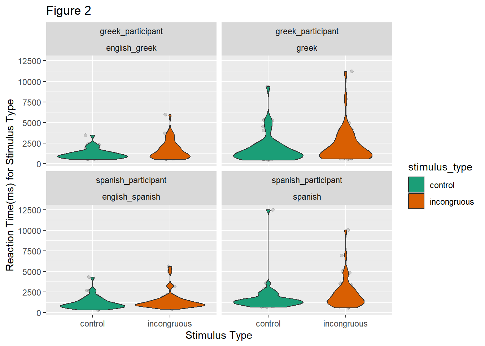
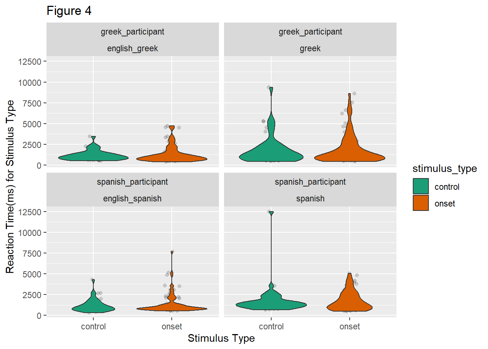
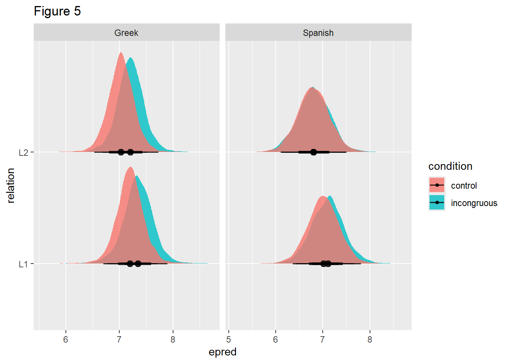
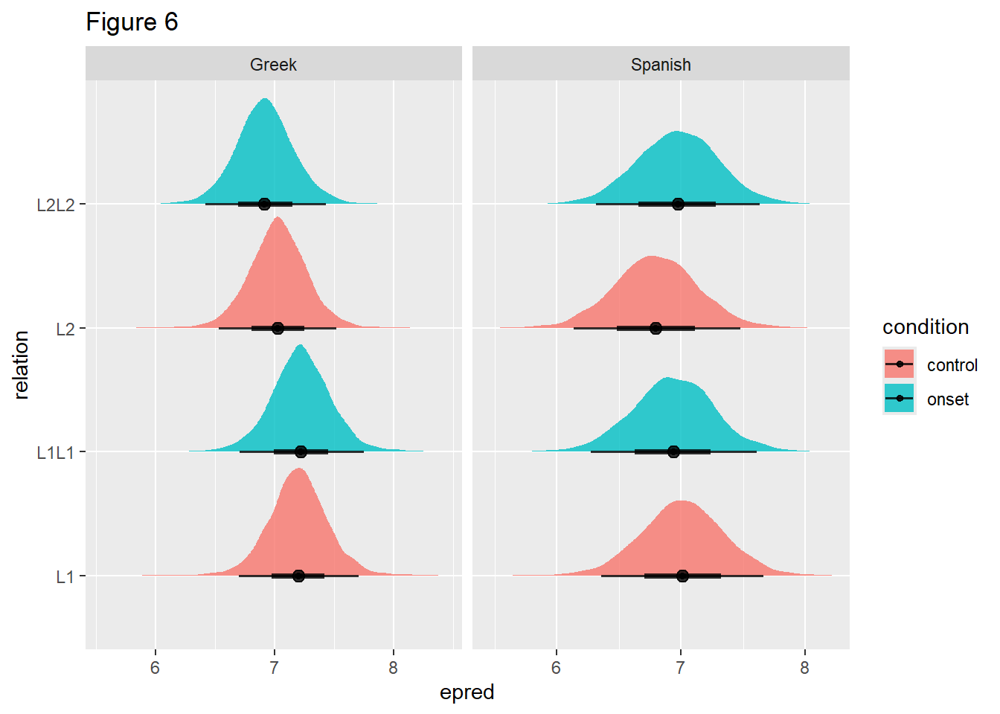

The bilingual Stroop paradigm is a modification of the original Stroop task Stroop (1935), and tests for interference effects between- and within-language. The Stroop effect is when a slower reaction time is incurred as a result of participants’ being presented with a colour term (e.g., RED) in a different text colour (e.g., RED in blue text). This nature of this inhibitory effect is semantic, as participants must suppress the associated colour term which is activated upon reading the lexical colour term in order to select a response associated with another colour term. In a bilingual Stroop task, participants complete the task in both languages and previous studies have found the classic Stroop effect both within-language and between-language [ Brauer (1998) ; Sumiya and Healy (2004); Šaban and Schmidt (2022) ]. Therefore, this indicates that both the L1 and the L2 is activated in the bilingual lexicon in Stroop tasks. However, the nature of this co-activation is not entirely clear.
Brauer (1998) argued that orthographic similarity modulates lexical access in the bilingual lexicon. In Brauer’s study, low-proficiency and high-proficiency English-German and English-Greek bilinguals took part in a bilingual Stroop task. Greek is written in Greek script which is a more orthographically opaque writing system than the Latin script used in German. The English-German bilinguals in this study exhibited less of a Stoop effect than the English-Greek bilinguals in the within-language condition, and more interference when responding in their L2 than the English-Greek bilinguals. Brauer interpreted these results to indicate that bilinguals with orthographically similar languages are less able to distinguish their lexicons and thus they find it more difficult to suppress activation of the L1 when colour naming in the L2. However, Brauer did not explicitly distinguish whether the stimuli items used in this study could have induced phonological effects despite investigating co-activation in the bilingual lexicon. Therefore, phonological interference may have impacted these results, as has been found in Sumiya and Healy’s study [ Sumiya and Healy (2004) ].
The bilingual Stroop effect was investigated in the phonological domain by Sumiya and Healy (2004). English-Japanese bilinguals took part in a bilingual Stroop task with Japanese stimuli items that were either cognates of English or were traditional Japanese colour terms that are phonologically distinct from English colour terms. The cognates induced a stronger Stroop effect despite being in a different orthographic script, thus demonstrating a phonological effect in lexical access for bilinguals. Therefore, according to Sumiya and Healy, this study strongly suggests that lexical items in the L1 and the L2 are connected at the phonological level. However, as the phonologically similar items in this study are cognates, the phonological effect found here may be indicative of a semantic effect that cannot be disambiguated in this Stroop task design. If the phonological representations of lexical items in the L1 and L2 are connected, thus impacting lexical access, items that are phonologically similar but semantically distinct would still induce the Stroop effect.
The current study sought to disambiguate potential orthographic and semantic interference from potential phonological interference found in previous studies [ Brauer (1998) ; Sumiya and Healy (2004) ; Šaban and Schmidt (2022) ], to investigate whether phonological processing does occur in lexical access in the bilingual lexicon. A bilingual Stroop paradigm was employed with Greek-English bilinguals and Spanish-English bilinguals, all of whom were high-proficiency in their L2 (English). Both Spanish and English are written in Latin script, whereas Greek is written in Greek script. Latin script has a more transparent grapheme-phoneme mapping than Greek script. Thus, comparing responses between the two bilingual groups will indicate whether orthographic similarity modulates the bilingual Stroop effect and thereby whether lexical access in the bilingual lexicon is modulated by orthographic similarity of the L1 and L2.
A facilitatory Stroop effect has been found when there is word initial phonological overlap between the stimulus item and the text colour [ Kinoshita and Verdonschot (2021) ; Coltheart et al. (1999) ; Verdonschot and Kinoshita (2018) ]. Thus, to examine phonological effects in this study and to distinguish them from semantic effects, this Stroop paradigm in the current study included non-colour lexical items that have the same phonological onset of the initial syllable as the text colour it appears in. This “onset effect” [ Kinoshita and Verdonschot (2021) ] was tested in both the L1 and the L2 to colour terms in the L1 and the L2, to determine if phonological activation occurs between- and within-languages. This Stroop task is not a phonological task in which participants verbalise responses, as phonological processing effects have been found to impact manual responses also [ Parris et al. (2019) ].
1.1 Research Questions
This study addresses the following research questions:
Research Question 1: does orthographic similarity modulate lexical access in the bilingual lexicon?
Research Question 2: does lexical access involve phonological processing?
Research Question 3: are lexical items in the L1 and L2 phonologically connected?
1.2 Research Hypotheses
In line with the previous studies discussed above, the following hypotheses were made:
The classic Stroop effect will be found in the within-language incongruous colour condition
Orthographic similarity will inhibit lexical access and the Spanish-English bilinguals will have slower reaction times in responses to incongruous colour terms in English than Greek-English bilinguals
Phonological processing impacts lexical access and stimuli items that phonologically overlap with the text colour will have a facilitatory effect within-language
Lexical items are phonologically connected in the bilingual lexicon and stimuli items that phonologically overlap with the text colour will have an inhibitory effect between-language
2 Methods
2.1 Participants
6 Greek-English bilinguals and 5 Spanish-English bilinguals took part in this study. Participation was voluntary and no compensation was given. Participants were recruited through informal networks. A participation information sheet was presented to participants prior to the experiment. The inclusion criteria for participants was native-level proficiency in their L1 and high-level proficiency in English for reading, speaking and listening abilities as these language skills are relevant to this study.
5 of the 6 Greek-English bilingual participants reported native proficiency in reading, writing, listening and speaking in Greek and high proficiency in reading, writing, listening and speaking in English. The data from 1 Greek-English bilingual participant was excluded on the basis that they reported high proficiency in Greek and native proficiency in English.
5 Spanish-English bilingual participants reported native proficiency in reading, writing, listening and speaking in Spanish. 4 Spanish-English bilinguals reported high proficiency in reading, writing, listening and speaking in English and 1 Spanish-English bilingual reported high proficiency in reading, listening and speaking but intermediate proficiency in writing in English. No data from the Spanish-English bilingual participants were excluded.
2.2 Materials
Each experiment comprised of two blocks, one with stimuli in English and one with stimuli in either Greek or Spanish. Each block consisted of 4 practice trials and 40 experimental trials, with 88 trials in total for each experiment. Each block consisted of 24 stimuli items, with each trial presented twice. All stimuli were presented in one of the following colours: yellow, green, orange and purple. The colour blue was not used in this Stroop paradigm as Greek has two basic colour terms for blue Androulaki et al. (2006) , thus this could be a source of interference. There were 4 stimulus types and 4 language conditions for each experiment (see GitHub repository for complete stimuli files):
Stimulus Type
Congruent
The stimuli item is a colour term that is presented in the same colour
Example: stimulus item - ΚΊΤΡΙΝΟ, text colour -yellow
Incongruent
The stimuli item is a colour term that is presented in a different colour
Example: stimulus item - ΚΊΤΡΙΝΟ, text colour - orange
Onset
The stimulus item is a non-colour term that is not semantically related to the colour it is presented in. The phonological onset of the word initial syllable of the stimulus item has the same phonological onset of the word initial syllable of the text colour (either in the L1 or the L2)
Example: stimulus item - GRILL, text colour - green
Control
The stimulus item is non-colour item that is not semantically or phonologically related to the text colour
Example: stimulus item - SKETCH, text colour - purple
Language condition
L1 to L1
The stimulus item is presented in the L1 and the targeted text colour term is in the L1
L2 to L2
The stimulus item is presented in the L2 and the targeted text colour term is in the L2
L1 to L2
The stimulus item is presented in the L1 and the targeted text colour term is in the L2
L2 to L1
The stimulus item is presented in the L2 and the targeted text colour term is in the L1
Word length was controlled to be the same length as the colour term of the text colour. For the Greek-English Stroop task, word length was controlled for each stimulus item except for 4 items in which there is not a lexical item that conformed to the stimulus type and was the same word length as the colour term.
The lexical items in Greek were extracted from (pring2000?) and the lexical items in Spanish were extracted from (scriven2009?).
2.3 Procedure
The experiment was online and hosted on Testable. Participants were sent a link to complete the experiment and were told to complete it on a device with keyboard keys. After clicking on the link, participants were first presented with a participation information sheet. For the Stroop task, participants responded with key presses to signify which colour the stimulus word is presented in. Reaction times (henceforth RTs) were recorded for analysis. After completing the experiment, participants were presented with a form collecting information on their self-rated proficiency in their L1 and in their L2. A Lickert scale of proficiency level (native, high, intermediate, low) and language skill (reading, writing, listening and speaking) for Greek/Spanish and English was presented to participants to record responses. A follow up question on the form asked participants if they speak any other languages (and to what proficiency) and they responded with a text box.
2.4 Statistical Analysis
A lognormal regression model was used to run a Bayesian statistical analysis of the results. To address the research questions, the following comparisons will be made between the expected values of the posterior predictive distribution (epreds):
Research Question 1: The epreds of the RTs to the within-language incongruent stimulus types (L1 and L2) will be compared to the epreds of RTs of the control stimulus types (L1 and L2) of each Stroop task, with the differences between these conditions compared between participant group
Research Question 2: The epreds of the RTs to the within-language onset stimulus types (L1 to L1 and L2 to L2) will be compared to the epreds of the RTs to the control stimulus types (L1 and L2) of each Stroop task, with the differences between these conditions compared between participant group
Research Q3: The epreds of RTs to the between-language onset stimulus types (L1 to L2 and L2 to L1) will be compared to the epreds of the RTs to the control stimulus types (L1 and L2) of each Stroop task, with the differences between these conditions compared between participant group
2.5 Open Research Statement
This research project has all resources available at this GitHub repository: liache3/rmdl-assessment-2-B285757
The GitHub repository hosts all stimuli materials, the Testable experiment files and the anonymised participant data.
3 Data Processing
All data files of the experiment results are in the “data” folder in the Github repository.
The following code details how the data was processed.
#load libraries needed for processing, analysing and plotting the datalibrary(tidyverse)
Warning: package 'ggplot2' was built under R version 4.5.3
── Attaching core tidyverse packages ──────────────────────── tidyverse 2.0.0 ──
✔ dplyr 1.1.4 ✔ readr 2.1.5
✔ forcats 1.0.1 ✔ stringr 1.5.2
✔ ggplot2 4.0.2 ✔ tibble 3.3.0
✔ lubridate 1.9.4 ✔ tidyr 1.3.1
✔ purrr 1.1.0
── Conflicts ────────────────────────────────────────── tidyverse_conflicts() ──
✖ dplyr::filter() masks stats::filter()
✖ dplyr::lag() masks stats::lag()
ℹ Use the conflicted package (<http://conflicted.r-lib.org/>) to force all conflicts to become errors
library(brms)
Loading required package: Rcpp
Loading 'brms' package (version 2.23.0). Useful instructions
can be found by typing help('brms'). A more detailed introduction
to the package is available through vignette('brms_overview').
Attaching package: 'brms'
The following object is masked from 'package:stats':
ar
library(tidybayes)
Warning: package 'tidybayes' was built under R version 4.5.2
Attaching package: 'tidybayes'
The following objects are masked from 'package:brms':
dstudent_t, pstudent_t, qstudent_t, rstudent_t
library(ggdist)
Attaching package: 'ggdist'
The following objects are masked from 'package:brms':
dstudent_t, pstudent_t, qstudent_t, rstudent_t
library(ggplot2)
3.0.1 Greek-English Stroop Task
#data from the Greek-English Stroop task#this reads in the data from the Greek participantsgreek_data <-read.csv("data/greek_stroop_data.csv")#condition 2 is the stimulus type. the column has been renamed#so when the data from the Greek and Spanish participants is combined,#it is clear that the values in this column are the stimulus types#and can be directly compared in the following data analysis#and visualisation.greek_data <- greek_data %>%rename(stimulus_type = condition2)#the language of the experimental block (i.e., whether the stimuli is#presented in Greek, English etc.) was not specified in#the original conditions file. the language of each block and#which experiment (Greek or Spanish) it was in is added here.#This is done prior to merging the data from the two experiments#as both contain the variable 2 (which is applied to L1 stimuli)#and 4 (which is applied to L2 stimuli) in the random column.#The column 'random' was used to randomise trials within block#and to make the blocks sequential.lang_greek_data <- greek_data %>%mutate(language =case_when( random ==2~"greek", random ==4~"english_greek" ) )#the qualitative data from the language experience form is removed#(the column type pertains to the type of stimuli presented)#so only the quantitative data remains for plotting and analysis.#the filter function is applied to the specific rows with#the filename '808048_260427_165642.csv' as this removes the trials#completed by the Greek-English bilingual participant#who was not a native speaker of Greek.greek_quant_data <- lang_greek_data %>%filter( type !="form", filename !="808048_260427_165642.csv" )#the participant id is added for each participant to make the data#easier to read.greek_quant_data <- greek_quant_data %>%mutate(participant =case_when( filename =="808048_260421_204245.csv"~"greek_participant1", filename =="808048_260421_222506.csv"~"greek_participant2", filename =="808048_260425_181643.csv"~"greek_participant3", filename =="808048_260427_144508.csv"~"greek_participant4", filename =="808048_260428_073835.csv"~"greek_participant5" ) )
3.0.2 Spanish-English Stroop Task
#data from the Spanish-English Stroop task#this reads in the data from the Spanish participantsspanish_data <-read.csv("data/spanish_stroop_data.csv")#the original conditions file for the Spanish-English Stroop task#erroneously contained a conditions column (labelled 'column2')#distinguishing if the stimuli were colour or non-colour terms.#This is removed here as it is unnecessary.spanish_data =subset(spanish_data, select =-c(condition2))#condition 3 is the stimulus type. the column has been renamed#so when the data from the Greek and Spanish participants is combined,#it is clear that the values in this column are the stimulus types#and can be directly compared in the following data analysis#and visualisation.spanish_data <- spanish_data %>%rename(stimulus_type = condition3)#the language of the experimental block (i.e., whether the stimuli#is presented in Greek, English etc.) was not specified in#the original conditions file. the language of each block and#which experiment (Greek or Spanish) it was in is added here.#This is done prior to merging the data from the two experiments#as both contain the variable 2 (which is applied to L1 stimuli)#and 4 (which is applied to L2 stimuli) in the random column.#The column 'random' was used to randomise trials within block#and to make the blocks sequential.lang_spanish_data <- spanish_data %>%mutate(language =case_when( random ==2~"spanish", random ==4~"english_spanish" ) )#the qualitative data from the language experience form is removed#(the column type pertains to the type of stimuli presented)#so only the quantitative data remains for plotting and analysis.spanish_quant_data <- lang_spanish_data %>%filter( type !="form" )#the participant id is added for each participant to make the data#easier to read.spanish_quant_data <- spanish_quant_data %>%mutate(participant =case_when( filename =="948943_260421_204027.csv"~"spanish_participant1", filename =="948943_260422_104418.csv"~"spanish_participant2", filename =="948943_260425_175949.csv"~"spanish_participant3", filename =="948943_260427_172931.csv"~"spanish_participant4", filename =="948943_260429_084028.csv"~"spanish_participant5" ) )
3.0.3 Greek-English and Spanish-English Stroop Tasks
#this combines the data from the Greek and Spanish bilingualsall_quant_data =bind_rows(greek_quant_data, spanish_quant_data)#this adds a condition column to clarify what language#each stimulus type was presented in.all_quant_data <- all_quant_data %>%mutate(condition =paste0(condition1, "_", stimulus_type))#this adds a column to adding participant group (Greek or Spanish)#as a data point.all_quant_data <- all_quant_data %>%mutate(participant_group =paste0(gsub('[0-5]+', '', participant)) )
The final data frame ‘all_quant_data’ contains the following columns:
participant - this is the participant id
participant_group - this is the participant group
condition - this is the trial condition
stimulus_type - this is the type of stimulus presented
RT - this is the reaction time of key press responses
language - this is the language that the stimulus was presented in
See all condition and stimulus types explained in the Methods section above.
#this only selects the columns with the data points required for analysis#reaction times higher than 14000 milliseconds were removed from#this data frame as there was a clear outlier response at 20883 millisecondsall_quant_data <- all_quant_data %>%select(participant, participant_group, condition, stimulus_type, RT, language) %>%filter(RT <14000)
3.1 Raw Data Visualisation
For all of the plots below, all responses for the Greek-English Stroop task are labelled under the ‘greek_participant’ participant group and all responses for the Spanish-English Stroop task are labelled as the ‘spanish_participant’ participant group. All values for each language condition are labelled either under ‘greek’ (for the Greek stimuli), ‘english_greek’ (for the English stimuli in the Greek Stroop task), ’spanish (for the Spanish stimuli) or ’english_spanish (for the English stimuli in the Spanish Stroop task).
3.1.1 Figure 1
3.1.1.1 Figure 1 Description
Figure 1 is configuration of four violin plots visualising all of data across all conditions and both Stroop tasks. The violin plots are split according to participant group and to language condition. The x-axis represents the categorical variable of stimulus type: congruous (in green), incongruous (in purple), control (in orange) and onset (in pink). The y-axis represents the continuous variable of RTs (in milliseconds).
In Figure 1, the results show that the Greek-English bilinguals had more variable RTs to all stimulus types in the Greek language condition than in the English language condition. This pattern of responses is also found for the Spanish-English bilinguals.
3.1.2 Figure 2
3.1.2.1 Figure 2 Description
Figure 2 is a violin plot visualising the potential orthographical effects found in both Stroop tasks. The violin plots are split according to participant group and to language condition. The x-axis represents the categorical variable of stimulus type: incongruous (in orange) and control (in green). The y-axis represents the continuous variable of reaction time (in milliseconds).
Figure 2 address Research Question 1 by comparing the RTs for the L1 incongruous and L1 control stimulus types and the L2 incongruous and L2 control stimulus types for each language group (Greek or Spanish). This comparison establishes if there is a Stroop effect in the L1 and in the L2 within-language, and if this Stroop effect in the L2 is stronger in Spanish-English bilinguals than the Greek-English bilinguals as predicted by Brauer (1998) .
#figure 2 tibble#creates a tibble with only 'control' and 'incongruous' conditionsorthographic_effect_raw <- all_quant_data %>%filter( stimulus_type !="onset", stimulus_type !="congruous" )#figure 2 plot#creates a violin plot of the potential orthographic effectsorthographic_effect_raw %>%ggplot(aes(stimulus_type, RT, fill = stimulus_type)) +facet_wrap(vars(participant_group, language)) +geom_jitter(alpha =0.15, width =0.1) +geom_violin(width =0.9) +scale_fill_brewer(palette ="Dark2")+xlab("Stimulus Type")+ylab("Reaction Time(ms) for Stimulus Type")+labs(title ="Figure 2")

3.1.2.2 Figure 2 Results
In Figure 2, the Greek-English bilinguals had more varied and longer RTs to the L1 stimulus types than to the L2 stimulus types. There were minimally longer RTs by the Greek-English bilinguals to the incongruous stimulus type than to the control stimulus type in both the Greek and English language conditions.
The Spanish-English bilinguals also had more varied and longer RTs to the L1 stimulus types than to the L2 stimulus types. There were minimally longer RTs by the Spanish-English bilinguals to the incongruous stimulus type than to the control stimulus type in both the Spanish and English language conditions, with an outlier longer RT to the control stimulus type in the Spanish language condition.
From the plot, the RTs to the incongruous condition across participant groups does not appear to yield an effect.
3.1.3 Figure 3
3.1.3.1 Figure 3 Description
Figure 3 is a violin plot visualising the potential within-language phonological processing effects in both Stroop tasks. The violin plots are split according to participant group and to language condition. The x-axis represents the categorical variable of stimulus type: onset (in orange) and control (in green). The y-axis represents the continuous variable of RT (in milliseconds)
Figure 3 addresses Research Question 2 by comparing the reaction times RTs for the within language overlapping phonological onset stimulus type (L1 to L1 onset and L2 to L2 onset) to the control stimulus type (L1 and L2) for the Greek Stroop task and the Spanish Stroop task. This comparison establishes if the within-language overlapping phonological onset (e.g., the phonological onset of the Greek colour term for the text colour overlaps with the phonological onset of the Greek stimulus item) modulates processing by impacting reaction times in comparison to the control stimulus type in which there is no semantic or phonological effect. Thus, the results for both Greek-English and Spanish-English bilinguals is presented for reaction times to the within-language onset and the control stimulus type in their L1 and in their L2.
#figure 3 tibble#creates a tibble with only 'control' and 'onset' stimulus types#and only for within-language conditions (L1_L1 and L2_L2)phonological_effect_raw <- all_quant_data %>%filter( stimulus_type !="incongruous", stimulus_type !="congruous", condition !="L1_L2", condition !="L2_L1" )#figure 3 plotphonological_effect_raw %>%ggplot(aes(stimulus_type, RT, fill = stimulus_type)) +facet_wrap(vars(participant_group, language)) +geom_jitter(alpha =0.15, width =0.1) +geom_violin(width =0.9) +scale_fill_brewer(palette ="Dark2")+xlab("Stimulus Type")+ylab("Reaction Time(ms) for Stimulus Type")+labs(title ="Figure 3")
3.1.3.2 Figure 3 Results
In Figure 3, the Greek-English bilinguals had minimally longer RTs to the within-language onset stimulus types than to the control stimulus types in both the Greek and English language conditions, with an outlier longer RTs to the control stimulus type in the Greek language condition.
The Spanish-English bilinguals had minimally longer RTs to the within-language onset stimulus types than to the control stimulus types in the Spanish language condition, with an outlier longer RT to the control stimulus type in this language condition. In the English language condition, Spanish-English bilingual participants had similar RTs to the within-language onset stimulus type and to the control stimulus type.
In the English language condition, the Greek-English and Spanish-English bilinguals had similar results, with an outlier longer RT to the within-language onset stimulus type by the Spanish-English bilingual participant group.
3.1.4 Figure 4
3.1.4.1 Figure 4 Description
Figure 4 is a violin plot visualising the potential between-language phonological processing effects in both Stroop tasks. The violin plots are split according to participant group and to language condition. The x-axis represents the categorical variable of stimulus type: onset (in orange) and control (in green).
Figure 4 addresses Research Question 3 by comparing the RTs for the between language overlapping phonological onset stimulus type (L1 to L2 onset and L2 to L1 onset) to the control stimulus type (L1 and L2) for the Greek Stroop task and the Spanish Stroop task. This comparison establishes if the between-language overlapping phonological onset (e.g., the phonological onset of the Greek colour term for the text colour overlaps with the phonological onset of the English stimulus item) modulates processing by impacting RTs in comparison to the control stimulus type in which there is no semantic or phonological effect. Thus, the results for both Greek-English and Spanish-English bilinguals is presented for RTs to the onset stimulus type between-language, and the control stimulus type in their L1 and in their L2.
#figure 4 tibble#creates a tibble with 'onset' stimulus types for#between-language conditions (L1_L2 and L2_L1)#and with 'control' stimulus types (for L1 and L2)bilingual_phonological_effect_raw <- all_quant_data %>%filter( stimulus_type !="incongruous", stimulus_type !="congruous", condition !="L1_L1", condition !="L2_L2" )#figure 4 plotbilingual_phonological_effect_raw %>%ggplot(aes(stimulus_type, RT, fill = stimulus_type)) +facet_wrap(vars(participant_group, language)) +geom_jitter(alpha =0.15, width =0.1) +geom_violin(width =0.9) +scale_fill_brewer(palette ="Dark2")+xlab("Stimulus Type")+ylab("Reaction Time(ms) for Stimulus Type")+labs(title ="Figure 4")

3.1.4.2 Figure 4 Results
In Figure 4, the Greek-English bilinguals had minimally longer RTs to the between-language L1 to L2 onset stimulus type (when the Greek stimulus item has the same phonological onset as the English colour term that the stimulus item is presented in) than to the L1 control stimulus type in the Greek language condition. The Greek-English bilinguals also had minimally longer RTS to the between-language L2 to L1 onset stimulus type (when the English stimulus item has the same phonological onset as the Greek colour term that the stimulus item is presented in) than to the L2 control stimulus type in the English language condition.
The Spanish-English bilinguals had minimally longer RTs to the between-language L1 to L2 onset stimulus type (when the Spanish stimulus item has the same phonological onset as the English colour term that the stimulus item is presented in) than to the L1 control stimulus type in the Spanish language condition, with an outlier longer RT to the L1 control stimulus type. The Spanish-English bilinguals had similar RTs to the between-language L2 to L1 onset stimulus type (when the English stimulus item has the same phonological onset as the Spanish colour term that the stimulus item is presented in) than to the L2 control stimulus type in the English language condition.
3.2 Raw Data Summary
The tibble below displays summaries of the raw data, with the mean (mean RT) and standard deviation (sd_RT) of the RTs to each stimulus type (condition) and language condition (language).
#this provides summary measures of the mean, median, standard deviation,#minimum and maximum reaction time values for each conditionall_data_raw_summary <- all_quant_data %>%group_by(condition, language) %>%summarise(mean =mean(RT), sd(RT))
`summarise()` has grouped output by 'condition'. You can override using the
`.groups` argument.
#this displays the summary of the raw dataprint(as_tibble(all_data_raw_summary))
A Bayesian regression model was fitted with a log-normal family for the outcome variable (RT) using the brms package. Condition, participant group and the within-participant-condition interaction were set as predictors, with the L1 congruous Greek condition as the reference level. A log-normal family was used as the outcome variable (RT) is a continuous variable that can only be a positive value. This model calculates the interactions of the categorical predictors of condition (informing stimulus type (e.g., incongruous) and relation (e.g., L1)) and participant group (informing which Stroop task (Greek or Spanish) the data is from).
#regression model#this runs a lognormal regression model of the entire quantitative dataall_quant_data_simple_brm <-brm( RT ~ condition * participant_group + (condition | participant),family = lognormal,data = all_quant_data,cores =4,seed =1329,file ="cache/RMDL_brms_RT_simple")
4.2 Statistical Data Results
4.2.1 Statistical Data Summary
At 95% credible interval, all predictors crossed 0. Thus, there is no evidence for a positive or negative effect in these results.
All RT values reported within the statistical analysis are of logged milliseconds.
#model summary#this presents the summary data from the lognormal regression model as#a tibble at a 95% credible intervalall_data_brm_summary <-summary(all_quant_data_simple_brm)
#draws from the model#this saves the values from the draws as a tibble to then calculate#the epreds of RTs for the different conditions#and participant groups.all_data_brm_draws <-as_draws_df(all_quant_data_simple_brm)#this creates a tibble with the epreds of RTs#for the conditions and participant groups.#the columns are named according to the L1 language of the experiment#(Greek or Spanish), the relation of the stimulus type to the L1#(L1 (i.e., Greek or Spanish), L2 (i.e., English)) and the stimulus type#itself (incongruous, control, onset).#See the Methods section above for a full explanation of the stimulus types.all_data_brm_draws_epreds <- all_data_brm_draws %>%mutate(Greek_L1_incongruous = b_Intercept + b_conditionL1_L1_incongruous,Greek_L2_incongruous = b_Intercept + b_conditionL2_L2_incongruous,Spanish_L1_incongruous = b_Intercept +`b_conditionL1_L1_incongruous:participant_groupspanish_participant`, Spanish_L2_incongruous = b_Intercept +`b_conditionL2_L2_incongruous:participant_groupspanish_participant`,Greek_L1_control = b_Intercept + b_conditionL1_L1_control,Greek_L2_control = b_Intercept + b_conditionL2_L2_control,Spanish_L1_control = b_Intercept +`b_conditionL1_L1_control:participant_groupspanish_participant`,Spanish_L2_control = b_Intercept +`b_conditionL2_L2_control:participant_groupspanish_participant`,Greek_L1L1_onset = b_Intercept + b_conditionL1_L1_onset,Greek_L2L2_onset = b_Intercept + b_conditionL2_L2_onset,Greek_L1L2_onset = b_Intercept + b_conditionL1_L2_onset,Greek_L2L1_onset = b_Intercept + b_conditionL2_L1_onset,Spanish_L1L1_onset = b_Intercept +`b_conditionL1_L1_onset:participant_groupspanish_participant`,Spanish_L2L2_onset = b_Intercept +`b_conditionL2_L2_onset:participant_groupspanish_participant`,Spanish_L1L2_onset = b_Intercept +`b_conditionL1_L2_onset:participant_groupspanish_participant`,Spanish_L2L1_onset = b_Intercept +`b_conditionL2_L1_onset:participant_groupspanish_participant` )#this creates a tibble with the epreds of RTs#for the conditions and participant groups pertaining to#the research questions of this study.critical_epreds <- all_data_brm_draws_epreds %>%select(Greek_L1_incongruous, Greek_L2_incongruous, Spanish_L1_incongruous, Spanish_L2_incongruous, Greek_L1_control, Greek_L2_control, Spanish_L1_control, Spanish_L2_control, Greek_L1L1_onset, Greek_L2L2_onset, Greek_L1L2_onset, Greek_L2L1_onset, Spanish_L1L1_onset, Spanish_L2L2_onset, Spanish_L1L2_onset, Spanish_L2L1_onset)
Warning: Dropping 'draws_df' class as required metadata was removed.
#this creates a tibble by adding columns with the pivot_longer function#to separate the different conditions (language, relation and stimulus type)#the column 'cond' is the with the conditions as values and#the column 'epred' is the logged reaction times from the draws#for these conditions.critical_epreds_long <- critical_epreds %>%pivot_longer(Greek_L1_incongruous:Spanish_L2L1_onset, names_to ="cond", values_to ="epred") %>%#this splits the `cond` column to make columns for language#(whether the experiment was for the Greek or Spanish participants),#relation (how the stimulus type relates to the language of#the experiment (L1 is Greek or Spanish, L2 is English)) and#condition (what the stimulus type is).separate(cond, c("language", "relation", "condition"))
4.3 Statistical Data Visualisation
4.3.1 Figure 5
#Figure 5#Figure 5 tibble addressing research question 1#creates a tibble with only 'control' and 'incongruous' conditionsorthographic_effect_epreds_long <- critical_epreds_long %>%filter( condition !="onset", condition !="congruous" )#Figure 5 plot addressing research question 1orthographic_effect_epreds_long %>%ggplot(aes(epred, relation, fill=condition)) +stat_halfeye(alpha =0.8) +facet_grid(cols =vars(language), scales ="free_x") +labs(title ="Figure 5")

4.3.1.1 Figure 5 Results
Figure 5 shows that the credible intervals of the epreds heavily overlap across the control and incongruous stimulus types and across both language conditions for the Greek-English bilinguals and the Spanish-English bilinguals.
4.3.2 Figure 6
#Figure 6#Figure 6 tibble addressing research question 2#creates a tibble with only 'control' and 'onset' stimulus types#and only for within-language conditions (L1_L1 and L2_L2)phonological_effect_epreds_long <- critical_epreds_long %>%filter( condition !="incongruous", condition !="congruous", relation !="L1L2", relation !="L2L1" )#Figure 6 plot addressing research question 2phonological_effect_epreds_long %>%ggplot(aes(epred, relation, fill=condition)) +stat_halfeye(alpha =0.8) +facet_grid(cols =vars(language), scales ="free_x") +labs(title="Figure 6")

4.3.2.1 Figure 6 Results
Figure 6 shows that the credible intervals of the epreds heavily overlap across the control and within-language onset stimulus types and across both language conditions for the Greek-English bilinguals and the Spanish-English bilinguals.
Figure 7 shows that the credible intervals of the epreds heavily overlap across the control and between-language onset stimulus types and across both language conditions for the Greek-English bilinguals and the Spanish-English bilinguals.
5 Discussion
This study sought to investigate whether lexical access is modulated by phonological processing, and thus if the bilingual lexicon has a connection between the L1 and the L2 at the phonological level. Greek-English and Spanish-English bilinguals took part in a bilingual Stroop paradigm and the reaction times (RTs) from these experiments were analysed for differences in processing cost across conditions in the L1 and L2.
To disambiguate between potential interference effects from orthographic similarity in the L1 and L2 (as posited by Brauer (1998)) and phonological processing, this study compared the RTs of the Greek-English bilinguals and the Spanish-English bilinguals to incongruous and control stimulus types within their L1 and their L2. It was predicted that the classic Stroop effect would be found, with longer RTs to the incongruous stimulus types than to controls. In line with Brauer (1998), it was also predicted that the Spanish-English bilinguals would have longer RTs to the incongruous stimulus items than the Greek-English bilinguals due to Spanish and English sharing the same orthographic script, unlike Greek and English. From both the raw data and statistical model, the classic Stroop effect an an effect of orthographic similarity between the L1 and L2 were not found in either participant group.
To establish if lexical access involves phonological processing, participants were presented with stimuli items that shared the same phonological onset of the word initial syllable of the text colour (in their L1) it appeared in. It was predicted that a facilitory effect would be found with shorted RTs to the within-language onset stimulus type than to the control stimuli items. However, neither the Spanish-English nor the Greek-English bilinguals exhibited behavioural evidence for phonological processing for within-language lexical access.
To investigate if the L1 and L2 in the bilingual lexicon is connected at the lexical level, the RTs were recorded to stimuli items that shared the same phonological onset of the word initial syllable of the text colour it appeared in, with the stimuli in the L1 and the phonological onset overlapped with the L2 colour term or vis versa with an L2 stimulus item and phonologically overlapping with the onset of the L1 colour term. These results were then compared to RTs to control stimuli items. It was predicted that an inihibatory effect would be found in processing between-language onset stimulus types due to interference caused in accessing the colour term in one language by the phonological activation of the colour term in the other language. As with the other predictions made in this study, the raw data and the statistical model did not indicate an effect of between-language phonological processing on lexical access in bilinguals.
As an effect was not found across all analyses, this study cannot draw firm conclusions for any of the research questions investigated. Thus, it is still unclear whether orthographic similarity in the L1 and L2 modulates lexical access for bilinguals, or of phonological processing both within- and between-languages impacts lexical access in the bilingual lexicon.
5.1 Limitations
The small sample size is a clear limitation of this study and is likely why an effect was not found in analysis of the raw data or of the statistical regression model, and future studies should recruit more participants to gather enough data to determine if there is an effect of any of the conditions within this experimental design. Another limitation is that the order of language blocks in both the Greek-English and the Spanish-English Stroop tasks were not counter-balanced across participants. Therefore, the increased variability in reaction times in the L1 language condition in both experiments compared to the L2 language condition may be due to the ordering of the trials, as participants may have had quicker reaction times after being exposed to more trials upon encountering the L2 language block. Thus, future studies should implement this design with a counter-balanced order of language blocks across participants to reduce this possible source of interference.
References
Androulaki, †Anna, Natalia Gômez-Pestaña, Christos Mitsakis, Julio Lillo, Kenny Coventry, and Ian Davies. 2006. “Basic Colour Terms in Modern Greek: Twelve Terms Including Two Blues.”Journal of Greek Linguistics 7 (January): 3–47. https://doi.org/10.1075/jgl.7.03and.
Brauer, Markus. 1998. Stroop Interference in Bilinguals: The Role of Similarity Between the Two Languages. Psychology Press.
Coltheart, Max, Anna Woollams, Sachiko Kinoshita, and Conrad Perry. 1999. “A Position-Sensitive Stroop Effect: Further Evidence for a Left-to-Right Component in Print-to-Speech Conversion.”Psychonomic Bulletin & Review 6 (3): 456–63. https://doi.org/10.3758/BF03210835.
Kinoshita, Sachiko, and Rinus G. Verdonschot. 2021. “Phonological Encoding Is Free from Orthographic Influence: Evidence from a Picture Variant of the Phonological Stroop Task.”Psychological Research 85 (3): 1340–47. https://doi.org/10.1007/s00426-020-01315-2.
Parris, Benjamin A., Dinkar Sharma, Brendan S. Hackett Weekes, Mohammad Momenian, Maria Augustinova, and Ludovic Ferrand. 2019. “Response Modality and the Stroop Task: Are There Phonological Stroop Effects with Manual Responses?”Experimental Psychology (Germany) 66 (5): 361–67. https://doi.org/10.1027/1618-3169/a000459.
Šaban, Iva, and James R. Schmidt. 2022. “Interlinguistic Conflict: Word–Word Stroop with First and Second Language Colour Words.”Cognitive Processing 23 (4): 619–36. https://doi.org/10.1007/s10339-022-01105-1.
Stroop, J. R. 1935. “Studies of Interference in Serial Verbal Reactions.”Journal of Experimental Psychology (US) 18 (6): 643–62. https://doi.org/10.1037/h0054651.
Sumiya, Hiromi, and Alice F. Healy. 2004. “Phonology in the Bilingual Stroop Effect.”Memory & Cognition 32 (5): 752–58. https://doi.org/10.3758/BF03195865.
Verdonschot, Rinus G., and Sachiko Kinoshita. 2018. “Mora or More? The Phonological Unit of Japanese Word Production in the Stroop Color Naming Task.”Memory & Cognition 46 (3): 410–25. https://doi.org/10.3758/s13421-017-0774-4.